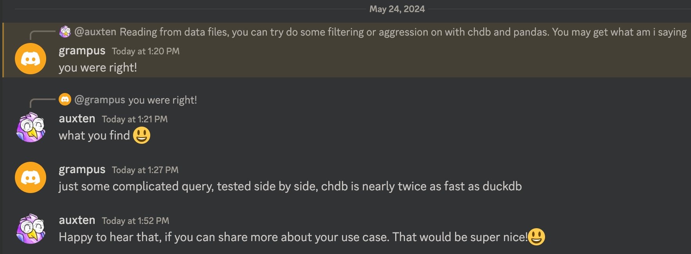

Integrations

1. (55 min) What's new in ClickHouse 24.5.
2. (5 min) Q&A.
ClickHouse Spring/Summer Release.
— 19 new features 🌿
— 20 performance optimizations 🚴
— 68 bug fixes 🐝
CREATE TEMPORARY TABLE test (
x Map(Array(Map(Float64, String)), String));
INSERT INTO test VALUES
({[]: 'Hello'}),
({[{1.1: 'test'}]: 'World'});
SELECT * FROM test1;
┌─x────────────────────────┐
1. │ {[]:'Hello'} │
2. │ {[{1.1:'test'}]:'World'} │
└──────────────────────────┘
Developer: TaiYang Li.
It was available for data import since 23.10.
Since 24.5 it also supports data export.
SELECT [number, number * 2]
FROM numbers(10) INTO OUTFILE 'test.npy' -- or FORMAT Npy
SELECT * FROM 'test.npy'
python3 -c "
import numpy as np;
array = np.load('test.npy');
print(array)"
Demo.
Developer: HowePa.
:) SELECT greatest(5, least(10, x))
:) SELECT max2(5, min2(10, x))
:) SELECT clamp(x, 5, 10)
Developer: skyoct.
:) SELECT generateSnowflakeID() FROM numbers(3)
┌─generateSnowflakeID()─┐
1. │ 7201822390320365568 │
2. │ 7201822390320365569 │
3. │ 7201822390320365570 │
└───────────────────────┘
Generates a monotonic 64-bit unique identifier.
Similar to UUID, but smaller and monotonic.
Has nothing to do with Snowflake Inc.
Developer: Danila Puzov.
SELECT * FROM s3(
's3://umbrella-static/top-1m-2024-01-*.csv.zip :: *.csv')
LIMIT 10;
SELECT _path, c1 FROM s3(
's3://umbrella-static/top-1m-2024-01-*.csv.zip :: *.csv')
WHERE c2 = 'clickhouse.com' ORDER BY _path;
The contents of container formats, such as *.tar.*, *.zip, *.7z
can be read directly from S3.
For the local filesystem — already supported since 23.8.
Developer: Dan Ivanik.
INSERT INTO test (c1, c2,) VALUES ('Hello', 'World',);
INSERT INTO test
(
c1,
c2,
)
VALUES
(
'Hello',
'World',
);
Developer: Alexey Milovidov.
ch -q "SELECT * FROM 'test.parquet' INTO OUTFILE 'test.csv.gz'"
Since version 24.5 it works even with shell redirects!
ch -q "SELECT * FROM 'test.parquet'" > test.csv.gz
Developers: v01dXYZ.
clickhouse-local --query "SELECT 1"
clickhouse-local -q "SELECT 1"
echo "SELECT 1" | clickhouse local
ch -q "SELECT 1"
echo "SELECT 1" | ch
ch "SELECT 1" # since 24.5
Developers: Alexey Milovidov.
SELECT 'Hello, world';
SELECT ‘Hello, world’;
Why??? Demo.
Developers: Alexey Milovidov.
Demo
Developers: Shaun Struwig.
Developer: ZhiHong Zhang.
UTF8 functions have shortcuts when a string is ASCII-only:
— substringUTF8, substringIndexUTF8, reverseUTF8,
lower/upperUTF8, left/rightPadUTF8.
splitByRegexp has a shortcut when a regular expression is a single character.
Developer: TaiYang Li.
For indices of type set.
Index analysis can take a long time, delaying query processing
especially for tables with trillions of rows or with a low index_granularity.
Now up to 1.5 times faster!
Developer: Alexey Milovidov.
When DateTime is compared with a constant DateTime64.
Developer: Alexey Milovidov.
When keys fit in 16 bits.
By optimizing merging of lookup tables.
Developer: Jie Binn.
prefix{1,2,3}/file*.csv
Was: make a regular expression
and match it against all paths for a prefix.
Now: interpret {1,2,3} as lazy generators,
only match file*.csv inside prefix1/, prefix2/, prefix3/.
Faster when there is a huge number of files.
Developer: Andrey Zvonov.
With sparse columns.
Sparse columns — is a special data format used for
columns with a high ratio of default values.
The query engine automatically takes the benefit of the sparse format
by optimizing functions and expressions.
Developer: Anton Popov.
A new experimental data type for semistructured data.
Similar to the Variant data type, but dynamic.
Variant(String, UInt64, Array(String)) — anything from the list of types.
Dynamic — anything, automatically extending the list of types.
Developer: Pavel Kruglov
Support for "workload identity" — Vinay Suryadevara.
Optimizing backups with the server-side copy — Alexander Sapin.
Support for plain_rewritable metadata for azure object storage — Julia Kartseva.
Azure is production ready since 24.5!
What for?
What for?
We launched ClickHouse Cloud on Azure (beta)!
ClickHouse Cloud: now on AWS, GCP, and Azure,
... and a partner service on AliCloud.
INSERT INTO test FORMAT Form
name=Vasya&email=vasya@pupkin.com&text=I%20like%20ClickHouse%20so%much!
Inserting directly from HTML forms (x-www-form-urlencoded MIME type)
Direct integration with JavaScript libraries, such as Boomerang.js.
Supports inserting a single record
(asynchronous inserts are recommended).
Developer: Shaun Struwig.
From now on, you will see JOIN improvements in every ClickHouse release.
In-memory compression for CROSS (comma) JOIN:
— fast processing of a large table's product.
On-disk processing for CROSS (comma) JOIN:
— generate a large table's product even when
the right hand side is too large.
Developer: TODO.
SET allow_experimental_join_condition = 1;
Developer: Lgbo-USTC.
Fast processing of Pandas Dataframes.
Developer: Auxten
Custom data types: any user-provided data type could be processed:
class myReader(chdb.PyReader):
def __init__(self, data):
self.data = data
self.cursor = 0
super().__init__(data)
def read(self, col_names, count):
block = [self.data[col] for col in col_names]
block = [col[self.cursor : self.cursor + count] for col in block]
self.cursor += block[0].shape[0]
return block
reader = myReader(df_old)
ret = chdb.query("""
SELECT RegionID, SUM(AdvEngineID), COUNT(*) AS c
FROM Python(reader) GROUP BY RegionID ORDER BY c DESC LIMIT 10""",
"DataFrame")
Developer: Auxten
Now we have:
— x86_64 (production); — aarch64 (production); — risc-v (experimental); — powerpc64-le (experimental); — s390x (experimental); — loongarch64 (experimental);
Developer: TODO
ClickPipes:
— Kinesis support;
— allow to set offsets for Kafka;
— meta-columns key, timestamp, headers, topic, offset for Kafka;
Metabase — directly import CSV into ClickHouse.
Updates for dbt and Tableau integrations,
as well as Java, Go, and Python drivers.
Contributors: TODO
— Real-world AWS Graviton 4 performance;
— The new SQL console;
— API endpoints;
— Flexible backups;
— How to become a certified ClickHouse developer;
— Why ClickHouse is faster than Elasticsearch;